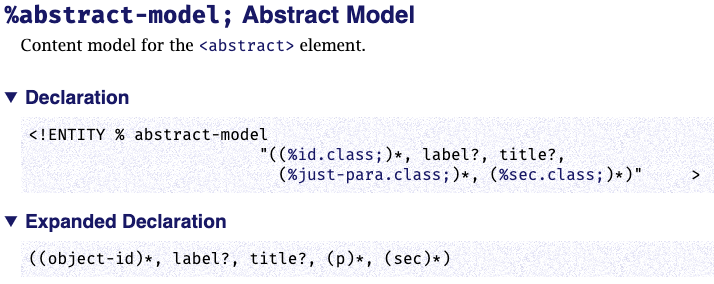
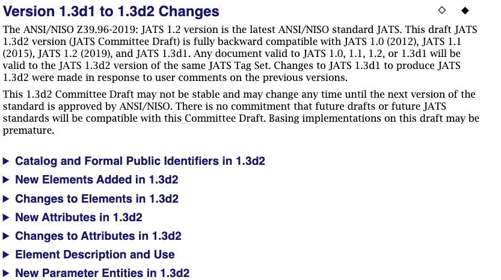
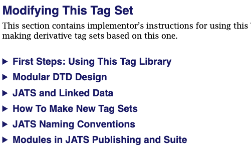

This is the section where the really geeky material is kept. This material is aimed at the software developer, the XMLer who need to make a JATS subset or superset, or the poor maintenance programmer who needs to keep a subset created (to fanfare) in 2001 fresh and running.
Figure 40. Content of the Technical Details Section
Parameter Entity section — ' Parameter Entities, like elements and attributes, get a page apiece. There are many parameter entities, since JATS is maintained as a DTD and customized using Parameter entities. Each content model, each attribute list, each set of attribute values, and many grouping of elements are represented by a parameter entity.
Figure 41. Portion of the Parameter Entity section
Figure 42. A Parameter Entity Page
|  |
Change History sections — Describes the ways in which each version of JATS is different from a previous version.
Figure 43. Citing Data section overview
|  |
Modifying This Tag Set — Provide information to developers who subset or superset JATS, by using the published JATS modules (unchanged!) to create JATS-based tag sets. Sections in this section describe the architecture and structure of a JATS tag set as well as the naming conventions used by JATS. By example, this section leads a developer through best practice in developing a new tag set based on JATS.
Figure 44. Subsections within Modifying This Tag Set
|  |